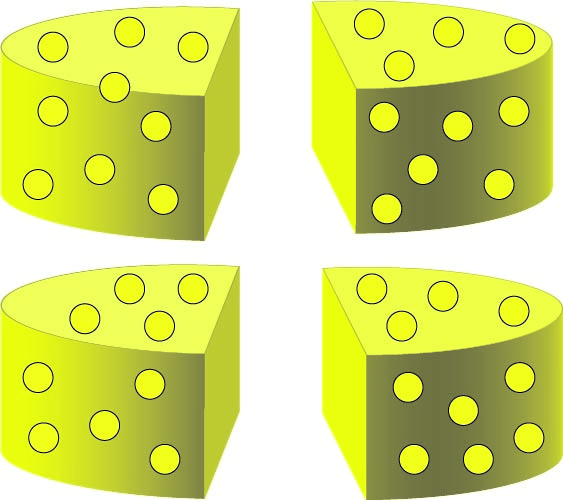

Step 2
For step 2 you are going to want to cut each of your half wheels into two more pieces each, cutting the entire wheel into fourths which should look like this:

Credits: Original Illustration and Photo By Katz, Bonnie.
Step 3